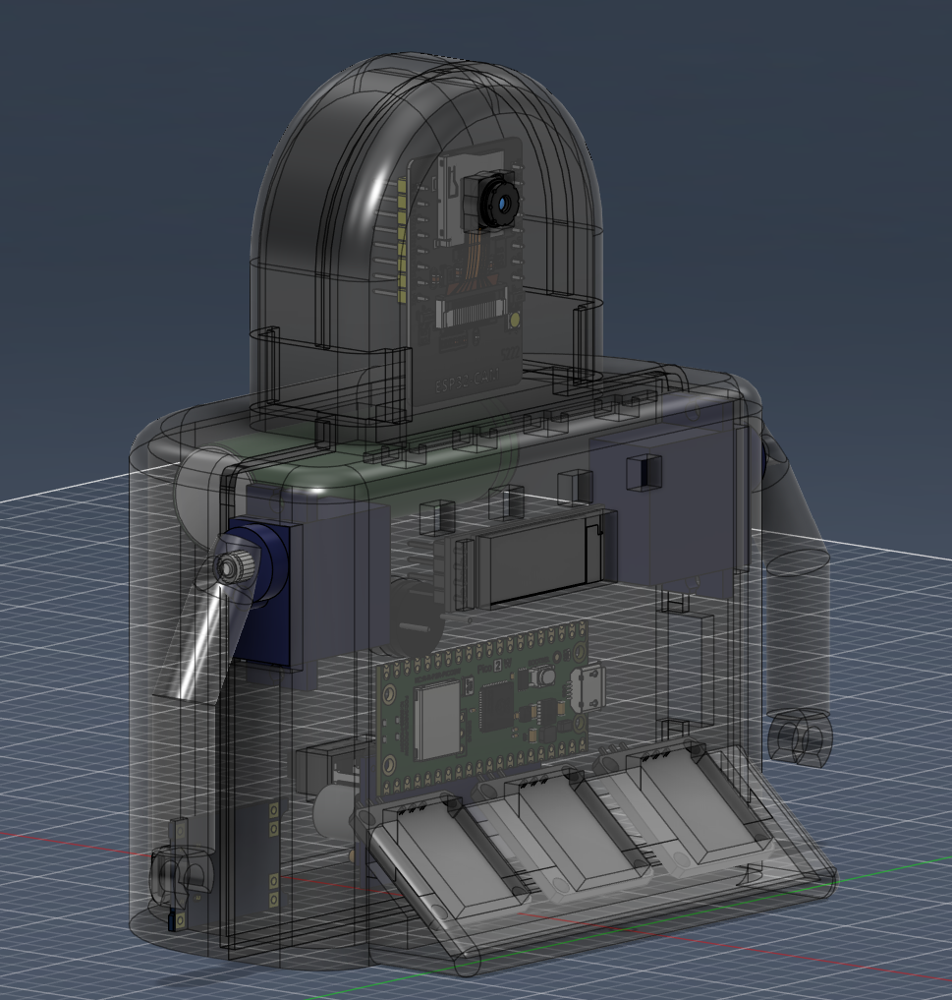
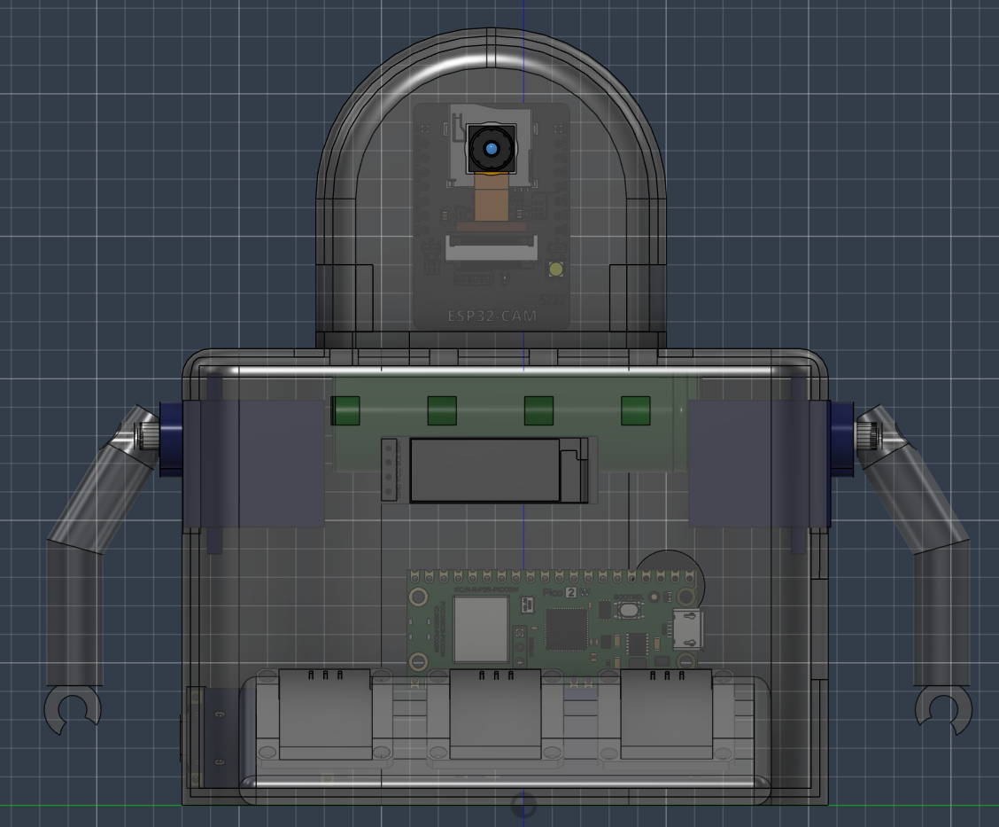
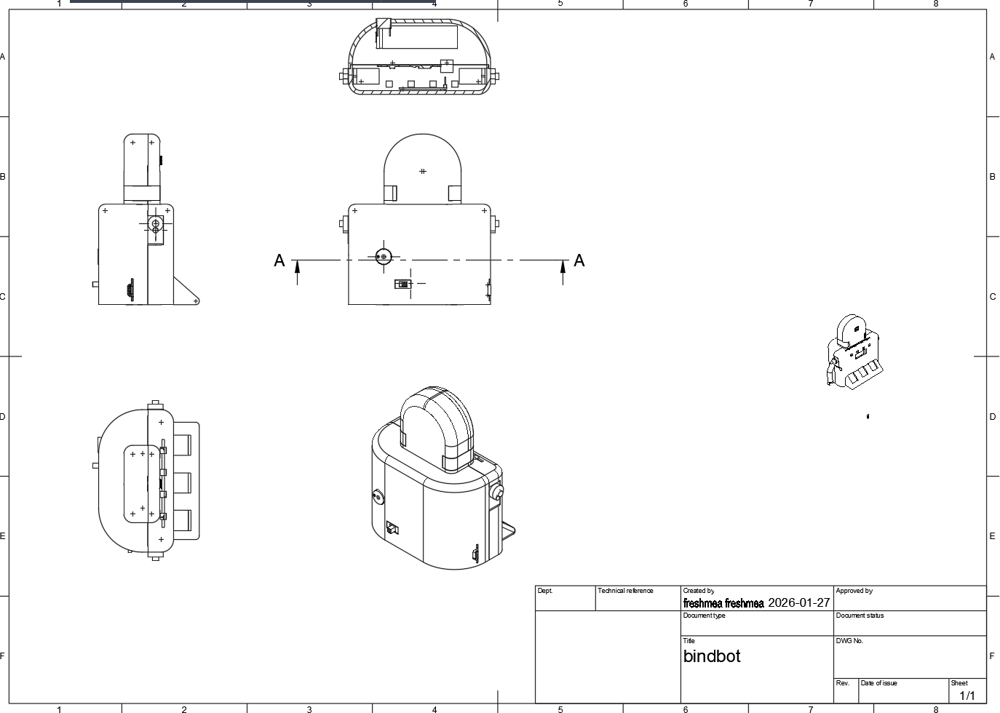

PROJECT / BINDBOT / 2026
작은 로봇,
연결되는 가능성.
바인드봇 · Raspberry Pi Pico 2 W × micro-ROS × FreeRTOS
통신, 동시 실행, 장치 제어와 기구 설계를 하나로 묶은 개발 기록
FROM A MESSAGE TO A MOVEMENT
PC에서 보낸 메시지가 작은 로봇의 팔을 움직인다. 터치 한 번은 다시 ROS 2의 상태 메시지가 된다. 바인드봇은 이 왕복 경로를 Wi-Fi, micro-ROS, FreeRTOS로 연결한 프로젝트다.
두 코어 위에서 통신과 장치가 함께 움직이기까지. 성공한 기능뿐 아니라 UDP 연결, 인터럽트, 한글 표시와 전원 문제를 풀어간 과정도 기록했다.

01 / BINDBOT DEVELOPMENT
작은 로봇 안에 담은, 하나의 분산 시스템
바인드봇(BindBot)은 Raspberry Pi Pico 2 W에 micro-ROS와 FreeRTOS를 결합한 로봇 개발 프로젝트다. PC에서 보낸 ROS 2 메시지로 두 개의 서보를 움직이고, 작은 OLED에 한글과 비트맵을 표시하며, 네오픽셀의 색을 바꾼다. 반대로 로봇에서 발생한 터치 입력은 ROS 2 토픽으로 PC에 전달한다. 로봇의 몸체와 호스트 프로그램을 같은 메시지 구조로 연결하는 것이 중심 과제였다.
개발은 단일 주변장치 예제를 하나씩 확인하는 데서 출발했다. UART와 Wi-Fi 통신을 점검하고 micro-ROS Agent 연결을 해결한 뒤, FreeRTOS 태스크를 도입하고 서보·터치·버저·디스플레이·LED를 통합했다. 이어 3D 케이스와 부품 배치까지 설계했다. 소프트웨어의 구독 콜백이 실제 장치의 움직임으로 이어지는 전체 경로를 작은 플랫폼에 담은 작업이다.
공개 README에는 2026년 1월 8일부터 24일까지의 개발일지가 남아 있다. 기구 도면의 작성일은 1월 27일이며, 확인한 저장소의 최신 커밋은 2월 9일의 ‘디자인 변경사항’이다. 이 글은 그 기록과 해당 커밋의 소스를 기준으로, 2026년 1–2월 개발 내용을 소개한다.
이 글에서 말하는 결과는 저장소의 구현과 개발일지에 남은 시험 기록이다. 이번 포스트 작성 과정에서 실물 로봇의 펌웨어를 다시 빌드·업로드하거나 장시간 구동 시험을 수행하지는 않았다. MADAM 대표 활동 이전의 개발 프로젝트를 기술 아카이브로 정리했다.
02 / BINDBOT DEVELOPMENT
Pico 2 W · micro-ROS · FreeRTOS의 역할
세 기술은 서로 다른 층을 맡는다. Pico 2 W는 센서와 출력 장치를 연결하는 하드웨어이고, micro-ROS는 그 하드웨어를 ROS 2의 메시지 세계로 연결하며, FreeRTOS는 보드 안의 여러 작업을 스케줄링한다. 바인드봇의 CMake 설정은 pico2_w 보드와 RP2350용 Arm FreeRTOS 포트를 선택한다.
| 구성 | 바인드봇에서의 역할 | 소스에 나타나는 구현 |
|---|---|---|
| Raspberry Pi Pico 2 W | 서보·터치·버저·OLED·LED를 연결하고 Wi-Fi 통신 수행 | GPIO, PWM, I²C, PIO, CYW43/lwIP |
| micro-ROS | 호스트의 ROS 2 노드와 명령·상태 메시지 교환 | rcl/rclc, executor, publisher/subscriber, custom UDP transport |
| FreeRTOS | 통신·주변장치·화면 작업을 분리하고 두 코어에 배치 | 3개 애플리케이션 태스크, core affinity, queue, critical section |
| 호스트 PC / Agent | 마이크로컨트롤러 측 통신을 ROS 2 그래프와 연결 | UDP 8888 Agent와 ROS 2 CLI·Python 시험 도구 |
명령 발행 · 상태 구독
UDP 8888
micro-ROS client
display_task: OLED 메시지·상태·비트맵
Pico 2 계열의 RP2350은 두 개의 Arm Cortex-M33 또는 두 개의 Hazard3 코어를 선택할 수 있다. 바인드봇은 이 가운데 Arm 구성을 사용하며, Pico 2 W의 무선 기능으로 호스트와 연결한다. 보드의 하드웨어 사양과 프로젝트의 실제 선택은 구분해서 읽어야 한다. Raspberry Pi 공식 제품 설명 ↗
03 / BINDBOT DEVELOPMENT
하드웨어 구성과 GPIO 배치
바인드봇의 입력은 세 개의 터치 센서, 출력은 두 개의 서보와 OLED·버저·네오픽셀로 구성된다. 서보는 팔의 움직임을, OLED는 문자와 상태를, LED와 버저는 즉각적인 반응을 맡는다. 하나의 명령을 운동·빛·소리·문자로 나누어 표현할 수 있어 센서와 액추에이터를 연결하는 실습에 활용하기 좋은 구성이다.
| 부품·기능 | GPIO / 인터페이스 | 구성 |
|---|---|---|
| 서보 1 / 서보 2 | GP2 / GP4 · PWM | 초기 각도 90°, 펄스 범위 500–2400 μs 설정 |
| 터치 센서 1 / 2 / 3 | GP18 / GP19 / GP20 | 입력 상태와 누름 유지 카운트 |
| 수동 버저 | GP16 · PWM | 비프음과 멜로디 재생 |
| WS2812 네오픽셀 | GP8 · PIO | LED 4개, 개별 색 지정과 패턴 출력 |
| SSD1306 OLED | GP6(SDA) / GP7(SCL) · I²C1 | 128×32, 주소 0x3C |
| 메시지 수신 표시 | GP1 | ROS 명령 수신 표시용 GPIO |
서보 드라이버에는 50 Hz와 20 ms 주기의 설정값이 있으며, PWM 래핑 인터럽트를 사용한다. 초기화 가드로 같은 인터럽트 핸들러를 반복 등록하지 않도록 구성했다. 네오픽셀은 ws2812.pio에서 생성한 PIO 헤더를 사용하므로, PWM 서보와 서로 다른 하드웨어 기능을 활용한다.
핀 번호와 펄스 폭은 이 저장소의 구성값이다. 다른 서보나 기구에 그대로 적용하는 범용 사양은 아니다. 현재 각도 처리 함수는 입력을 abs(angle) % 181로 변환하므로, 실습 명령은 의도한 0–180 범위 안에서 보내는 편이 명확하다.
04 / BINDBOT DEVELOPMENT
두 코어에 나눈 세 개의 FreeRTOS 태스크
Wi-Fi 응답을 기다리는 동안에도 터치 입력을 읽고 화면을 갱신해야 한다. 이를 위해 main.c는 세 개의 애플리케이션 태스크를 만든다. Core 0에는 통신 태스크를, Core 1에는 주변장치와 디스플레이 태스크를 고정한다. 이 배치는 스케줄러가 실행할 코어를 제한하는 core affinity 설정으로 구현되어 있다.
| 태스크 | 코어 | 우선순위 | 스택 설정 | 주요 역할 |
|---|---|---|---|---|
| ros_task | 0 | 30 | 8,192 words / 32 KiB | Wi-Fi 연결, micro-ROS 초기화, executor, Agent 점검 |
| periph_task | 1 | 2 | 8,192 words / 32 KiB | 터치, 모드 전환, 버저, LED, 주변장치 초기화 |
| display_task | 1 | 1 | 2,048 words / 8 KiB | 표시 명령 수신, 문자열 스크롤, OLED 갱신 |
FreeRTOS 설정은 선점형 스케줄링, 1,000 Hz tick, 두 코어, 128 KiB 힙, 스택 오버플로 검사와 메모리 할당 실패 훅을 활성화한다. 스택 크기는 32비트 word 기준으로 환산한 설정값이며 실제 사용량 측정치는 아니다. 커널의 idle·timer 태스크도 존재하므로 표의 세 개는 전체 시스템 태스크 수가 아니라 애플리케이션 태스크 수다.
명령을 큐로 넘겨 장치 작업을 분리하다
OLED는 메시지·비트맵·모드·접속 상태를 담은 명령을 길이 4의 큐로 받는다. 네오픽셀 명령도 길이 4의 큐를 거치고, 터치 유지에 따른 비프 이벤트는 길이 8의 큐로 전달된다. 수신 콜백 안에서 화면이나 LED의 전체 처리를 끝내지 않고, 담당 태스크가 명령을 소비하도록 역할을 나눈 것이다.
주변장치 루프는 한 번 돌 때마다 20 ms 동안 vTaskDelay로 실행을 양보한다. 통신 루프도 executor 처리 뒤 Wi-Fi를 poll하고 1 ms를 양보한다. 디스플레이는 50 ms의 기본 대기 설정과 명령 수신을 조합한다. 이 값들은 루프의 대기·설정값이지, 실제 응답 지연이나 주기 정확도를 측정해 보장한 수치는 아니다.
현재 큐 전송은 대기 시간 0을 사용하며 일부 경로는 전송 실패를 따로 처리하지 않는다. 또 서보 명령은 통신 콜백과 로컬 모드 양쪽에서 발생할 수 있다. 명령 집중 시 손실 정책과 제어 권한 조정은 후속 개선 항목이다.
05 / BINDBOT DEVELOPMENT
Wi-Fi가 연결되어도, ROS 메시지는 도착하지 않았다
1월 8일 기록에는 UART 통신과 Wi-Fi ping·iperf 테스트는 통과했지만, Wi-Fi를 통한 micro-ROS Agent 연결은 실패했다고 적혀 있다. 네트워크에 연결되는 것과 ROS 메시지 세션이 성립하는 것은 별개의 단계였다. WSL 네트워크 환경을 바꾸거나 방화벽을 점검하는 것만으로 해결되지 않았고, 다음 날 전송 방식 설정에서 실마리를 찾았다.
UDP에는 패킷 경계를 보존하는 전송 방식
1월 9일에는 rmw_uros_set_custom_transport()의 첫 인자를 true에서 false로 바꾸어 UDP 통신이 가능해졌다고 기록했다. 현재 코드도 같은 설정을 사용한다. micro-ROS의 custom transport는 스트림 방식과 패킷 방식을 구분하며, framing을 끄는 설정은 이미 패킷 단위를 가진 UDP 경로와 맞물린다. micro-ROS 공식 custom transport 문서 ↗
rmw_uros_set_custom_transport(
false, NULL,
pico_wifi_transport_open,
pico_wifi_transport_close,
pico_wifi_transport_write,
pico_wifi_transport_read);프로젝트는 open·close·write·read 함수를 직접 구현해 lwIP UDP와 micro-ROS를 연결한다. 수신부는 최대 512바이트의 패킷 16개를 보관하고, 패킷을 나누어 읽지 않도록 경계를 유지한다. 설정한 Agent의 주소와 포트에서 온 패킷만 받으며, 수신 큐가 찼거나 버퍼가 작을 때의 폐기 경로도 둔다.
FreeRTOS와 함께 진행되는 네트워크 처리
CMake는 pico_cyw43_arch_lwip_poll을 링크한다. 따라서 통신 루프와 read 대기 경로에서 cyw43_arch_poll()을 호출해 드라이버 처리가 진행되게 한다. 기다릴 때는 FreeRTOS 지연 API를 사용하며, UDP 수신 큐 접근에는 임계 구역을 적용한다. POSIX 형태의 usleep과 clock_gettime 함수도 Pico 환경에 맞춰 제공한다.
이 작업의 의미는 ‘Wi-Fi 기능 추가’에 그치지 않는다. 전송 패킷의 형태, 버퍼 수명, 드라이버 진행, 스케줄러의 대기 방식까지 같은 실행 환경에 맞추어야 ROS 2 메시지가 장치 제어까지 도달한다는 점을 확인한 과정이다.
06 / BINDBOT DEVELOPMENT
ROS 2에서 보이는 바인드봇의 인터페이스
최종 uros.c는 구독 5개와 발행 6개를 생성한다. 노드 이름은 bindbot, 네임스페이스는 빈 문자열로 설정되어 있다. 아래는 기본 이름 공간 기준의 전체 토픽이다. 타입 이름에는 ROS 2 CLI에서 사용하는 std_msgs/msg/ 경로를 표기했다.
| 토픽 | 메시지 타입 | 처리 |
|---|---|---|
| /servo_angle | std_msgs/msg/Int32 | 서보 1의 목표 각도 |
| /servo2_angle | std_msgs/msg/Int32 | 서보 2의 목표 각도 |
| /display_message | std_msgs/msg/String | OLED 표시 문자열 |
| /display_bitmap | std_msgs/msg/UInt8MultiArray | 128×32 단색 비트맵, 512바이트 |
| /ws2812_pixel | std_msgs/msg/UInt8MultiArray | [index, r, g, b] 형식의 4바이트 |
| 토픽 | 메시지 타입 | 의미 |
|---|---|---|
| /touch_1/state | std_msgs/msg/Bool | 터치 센서 1의 누름 상태 |
| /touch_2/state | std_msgs/msg/Bool | 터치 센서 2의 누름 상태 |
| /touch_3/state | std_msgs/msg/Bool | 터치 센서 3의 누름 상태 |
| /touch_1/beep_count | std_msgs/msg/UInt8 | 센서 1의 유지 카운트 |
| /touch_2/beep_count | std_msgs/msg/UInt8 | 센서 2의 유지 카운트 |
| /touch_3/beep_count | std_msgs/msg/UInt8 | 센서 3의 유지 카운트 |
터치 상태와 카운트는 100 ms 타이머 콜백에서 발행한다. 누름 유지 카운트의 증가 간격은 500 ms 설정으로, 발행 주기와 서로 다르다. 모든 publisher와 subscriber는 기본 QoS 프로파일을 복사한 뒤 depth를 10으로 지정한다.
executor는 구독 5개와 타이머 1개, 총 6개 핸들을 사용한다. 소스의 오래된 주석에 다른 숫자가 적혀 있어도 실제 초기화 인자와 등록 호출을 기준으로 읽었다. publisher 6개는 타이머 콜백 안에서 직접 발행하므로 이 executor 핸들 수에 더하지 않는다.
초기 시험 문서와 test_buzzer.py에는 /buzzer가 등장하지만 현재 uros.c에는 해당 구독이 없다. 현재 버저는 터치 이벤트와 동작 모드에서 제어한다. 과거 예제의 인터페이스를 최종 펌웨어 기능으로 혼동하지 않도록 구분했다.
07 / BINDBOT DEVELOPMENT
터치·팔·소리·화면을 묶은 네 가지 모드
바인드봇은 ROS 명령만 기다리는 장치가 아니라 로컬 입력으로도 반응하는 인터페이스를 갖는다. 모드 매니저는 각 모드에 init, enter, exit, update, button 함수를 연결한다. 공통 주변장치 초기화와 개별 동작 규칙을 분리한 구조다.
| 모드 | 화면·목적 | 터치 2 / 터치 3의 역할 |
|---|---|---|
| MODE 1 | Wi-Fi·micro-ROS 접속 상태와 장치 반응 점검 | LED 패턴 전환 / 임의 멜로디 재생 |
| MODE 2 | 메시지 표시와 양팔 제어 | 오른쪽 팔 / 왼쪽 팔을 움직이고 약 300 ms 뒤 복귀 명령 |
| MODE 3 | 10에서 시작하는 숫자 표시와 반응 놀이 | 숫자 증가 / 감소와 임의의 한쪽 팔 동작, 0에서 생일 멜로디 |
| MODE 4 | micro-ROS 수신 화면 | 로컬 버튼에 별도 동작 없음; 수신 문자열·비트맵 표시 |
현재 주변장치 태스크에서는 터치 센서 1이 다음 모드로 전환하고, 센서 2와 3이 모드별 버튼 역할을 맡는다. 초기 일지의 ‘터치 3으로 화면 전환’은 개발 중간 단계의 기록으로, 최종 코드의 매핑과 다르다.
OLED: 한글 메시지에서 512바이트 이미지까지
OLED는 u8g2와 한국어 폰트를 사용한다. 긴 문자열은 표시 폭에 따라 스크롤하고, 네 번째 모드에서는 유효한 비트맵이 있으면 128×32 XBM 형식으로 그린다. 문자열 수신 버퍼는 최대 128바이트에 종료 문자를 위한 공간을 더한 크기다. UTF-8 한글은 여러 바이트를 사용하므로 128글자를 의미하지 않는다.
1월 20일 기록에는 I²C 주소 확인, 속도를 100 kHz로 낮춘 시험, 드라이버와 초기화 점검을 거쳐 한글·특수문자 문제를 해결한 과정이 남아 있다. 하드웨어 스크롤과 부분 갱신의 동기화를 시도했지만 채택하지 못한 내용도 함께 기록했다. 다음 날에는 u8g2 기반 화면과 ROS 문자열 수신을 통합했다.
네오픽셀: 로컬 패턴과 원격 명령의 공존
ROS로 개별 픽셀 색을 지정하면 주변장치 태스크가 큐에서 명령을 꺼내 적용하고, 5초 동안 자동 패턴 갱신을 억제한다. 이후 패턴 실행으로 돌아가는 구조다. 로컬 데모와 호스트 명령이 같은 LED를 제어할 때 어느 쪽이 잠시 우선하는지 코드로 표현한 사례다.
08 / BINDBOT DEVELOPMENT
연결이 끊어진 다음까지 설계하기
한 번 통신되는 데모와 반복 사용할 수 있는 장치 사이에는 재접속 문제가 있다. 바인드봇은 Wi-Fi 접속 여부와 micro-ROS 연결 여부를 따로 관리해 OLED 상태 화면에 전달한다. 공유기에 접속했더라도 Agent와의 세션은 성립하지 않았을 수 있기 때문이다.
- Wi-Fi 연결: 연결을 시도하고 IP·접속 상태를 화면에 전달한다.
- Agent 확인: 설정한 timeout과 시도 횟수로 Agent에 ping을 보낸다.
- ROS 엔티티 생성: node, publisher, subscriber, timer, executor와 수신 버퍼를 준비한다.
- 실행과 생존 확인: executor를 돌리면서 약 5초 간격으로 Agent ping을 검사한다.
- 실패 후 정리·재시도: 실행 중 연결을 잃으면 timer를 멈추고 리소스를 정리한 뒤, 5초 대기 후 초기화를 다시 시도한다.
1월 23일 일지는 CYW43 중복 초기화 방지, 정적 문자열 버퍼에 대한 해제 호출 제거, 재접속·cleanup 개선을 기록한다. 현재 cleanup 코드도 정적 수신 버퍼의 size를 초기화하고 ROS 엔티티를 순서대로 정리한다. 고정 버퍼를 사용한다면 그 메모리의 소유권까지 맞춰야 한다는 점이 드러난다.
1월 24일에는 구독 토픽을 4개 이상 늘릴 때 매칭이 불안정했던 문제를 다뤘다. QoS depth 10 명시, 네오픽셀 수신 버퍼의 size·capacity 설정 수정, Humble 환경에서 직접 빌드한 Agent 사용 등의 조치가 기록되어 있다. 일지는 Agent 변경 후 문제 해결을 보고하지만, 각 조치의 효과를 분리한 비교 실험은 제시하지 않는다.
재연결 경로가 존재하는 것과 모든 실패 지점에서의 복구를 보장하는 것은 다르다. 초기화 중간 실패의 정리, 반복 접속에 따른 메모리 사용, 메시지 집중 시 큐 포화, 장시간 Wi-Fi 단절 후 회복은 별도 측정과 시험이 필요한 항목으로 남는다.
09 / BINDBOT DEVELOPMENT
1월의 개발 기록: 연결에서 통합으로
| 날짜 | 작업·문제 | 기록이 보여주는 변화 |
|---|---|---|
| 2026.01.08–09 | UART·Wi-Fi 시험, UDP Agent 연결 실패와 framing 수정 | 통신 경로를 분리해 확인하고 custom transport 설정 수정 |
| 01.10 | 단일 예제 모듈화, 프로젝트 이름을 bindbot으로 변경 | 설정 중앙화, bindbot.uf2 생성 기록 |
| 01.12–14 | FreeRTOS 도입, 개별 RTOS·micro-ROS 시험 후 통합 | Wi-Fi·구독 문제를 모듈별 재구성으로 점검; 일부 원인은 미확정 |
| 01.15 | 터치 통합, 서보 2개, core 초기화와 IRQ 충돌 수정 | 통신과 PWM을 함께 사용하는 실행 구조 정리 |
| 01.19 | 배터리·전원 모듈 시험, OLED 통합 | 전원 과도 전압에 따른 부품 손상과 공급 분리 필요성 기록 |
| 01.20–21 | 한글 OLED, 문자열 토픽, WS2812 패턴 | 로봇의 문자·빛·소리 피드백 확장 |
| 01.23–24 | 재연결, 버퍼 수명, 다중 구독과 Agent 환경 점검 | 터치 6개 발행 토픽과 비트맵 수신 경로 정리 |
| 01.27 / 02.09 | 기구 도면 작성일 / 저장소 디자인 변경 커밋 | 펌웨어를 담을 외형과 부품 배치 자료 확보 |
이 일정은 개발일지와 도면·커밋에 확인되는 날짜를 정리한 것이다. 그 사이의 매일을 작업일로 가정하거나, 2월 9일을 제품 완성·출시일로 해석하지 않았다. 기능별 기록을 따라가면 연결, 동시 실행, 사용자 피드백, 복구, 기구 설계로 관심사가 확장되는 과정을 읽을 수 있다.
10 / BINDBOT DEVELOPMENT
기구 설계와 전원: 코드 밖의 통합 문제
기구 자료에는 로봇의 정면·사선 CAD 화면, 외형 도면, 앞·뒤 케이스와 팔 부품의 STL, 전체 조립 3MF, MDF 가공용 DXF가 들어 있다. 설계는 몸체 안에 Pico 2 W와 디스플레이를 배치하고 양옆에 서보 기반 팔을 두며, 아래쪽에 터치 입력을 배치하는 형태다.

크게 보기 ↗공개 저장소의 CAD 화면. 완성품 사진이나 동작 시험 장면은 아니다.
정면 CAD 원본 ↗
설계에는 상단 ESP32-CAM도 포함되지만, 이 글의 Pico 펌웨어 범위에서 영상·AI 처리는 확인되지 않는다.
사선 CAD 원본 ↗

배터리에서 Wi-Fi와 서보까지
1월 19일에는 18650 배터리, TP4056 충전 모듈, 승압 컨버터, IP5306 기반 모듈을 시험했다. 개발일지는 전원 구성에 따라 Wi-Fi가 켜지지 않거나 서보가 동작하지 않는 현상, 특정 시험 연결에서 과도 전압으로 보드와 서보가 손상된 사례를 기록한다. 같은 날 전원 보드 연결 후 micro-ROS 동작을 확인한 기록도 있다.
전원 문제는 이 프로젝트에서 실제로 겪은 통합 과제다. 펌웨어가 정상이어도 무선 통신과 액추에이터가 요구하는 전력을 안정적으로 공급하지 못하면 로봇은 동작하지 않는다. 일지는 Pico와 서보 전원 공급을 나눌 필요성을 적었지만, 최종 전원 회로의 검증 보고서나 배터리 지속시간 측정은 제공하지 않는다. 여기의 시행착오는 검증된 제작용 전원 회로를 대신하지 않는다.
IMU, DC 모터 드라이버와 카메라 등의 부품·확장 구상도 자료에 등장한다. 다만 현재 메인 펌웨어에서 확인되는 서보·터치·OLED·LED·버저와 구분해야 한다. 카메라 영상 인식이나 자율주행까지 완성한 프로젝트로 확대해서 소개하지 않았다.
11 / BINDBOT DEVELOPMENT
소스를 다시 읽고 실습을 이어가는 순서
저장소를 읽는 길
| 경로 | 살펴볼 내용 |
|---|---|
| CMakeLists.txt | pico2_w 보드, RP2350 FreeRTOS 포트, 라이브러리, bindbot 타깃 |
| src/main.c / src/config/ | 태스크·코어 배치, 핀·화면·통신 설정, FreeRTOS 구성 |
| src/tasks/ | micro-ROS, 주변장치, OLED 작업 |
| src/transport/ | Wi-Fi 연결과 custom UDP 전송 |
| src/drivers/ / src/modes/ | 장치 제어와 네 가지 동작 모드 |
| test/ / example/ | 호스트 시험 스크립트와 개별 장치 예제 |
| design_file/ | 외형 도면, STL·3MF·STEP·DXF 기구 자료 |
먼저 같은 커밋을 기준으로 소스를 읽고, Pico SDK·FreeRTOS·micro-ROS 정적 라이브러리와 Agent 환경을 맞춰야 한다. 초기 README에는 Foxy·Pico SDK 1.6.0 표기가 있고, 후반 개발 기록은 Humble Agent와 정적 라이브러리 생성 환경을 다룬다. 따라서 초기 설치 목록을 최종적으로 검증된 버전 조합으로 취급하지 않는다. CMake의 RP2350 포트 경로와 외부 의존성 확보 여부부터 확인하는 것이 출발점이다.
현재 검토한 로컬 체크아웃에서는 CMake가 요구하는 FreeRTOS 포트 파일이 준비되어 있지 않아, 이번 글을 위해 펌웨어 빌드를 수행하지 않았다. 저장소의 빌드 성공 기록은 당시 개발일지에 근거한 결과다. 재현 시에는 네트워크 자격 정보와 Agent 주소를 자신의 환경에 맞추고, 호스트와 펌웨어의 ROS 도메인 설정도 확인해야 한다.
실물 펌웨어와 Agent가 준비된 뒤의 호스트 확인 예시
아래 명령은 기본 네임스페이스의 현재 토픽에 맞춘 확인 절차다. 해당 ROS 2 환경을 source한 호스트에서 실행하며, Agent 실행과 토픽 명령은 별도 터미널을 사용한다. 이번 작성 과정에서 실물 대상으로 실행한 결과를 의미하지는 않는다.
ros2 run micro_ros_agent micro_ros_agent udp4 --port 8888
# 별도 터미널: 노드와 상태 확인
ros2 node list
ros2 topic list
ros2 topic echo /touch_1/state
# 각각의 명령은 개별적으로 실행
ros2 topic pub --once /servo_angle std_msgs/msg/Int32 "{data: 90}"
ros2 topic pub --once /servo2_angle std_msgs/msg/Int32 "{data: 90}"
ros2 topic pub --once /display_message std_msgs/msg/String "{data: '안녕하세요, 바인드봇'}"
ros2 topic pub --once /ws2812_pixel std_msgs/msg/UInt8MultiArray "{data: [0, 40, 0, 0]}"문자열은 표시 가능한 모드에서, 비트맵은 MODE 4에서 확인한다. 터치 센서 1로 모드를 순환할 수 있다. 시험 폴더에는 서보·터치·네오픽셀·비트맵 스크립트가 있지만, 오래된 런처와 버저 시험 항목은 최종 인터페이스와 차이가 있으므로 스크립트의 토픽을 먼저 대조해야 한다.
교육용 확장으로 이어지는 순서
- 입출력 이해: 터치 하나와 LED 하나를 연결하며 GPIO 입력, 상태 변화, 주기 실행을 익힌다.
- 메시지 연결: 서보 명령과 터치 상태를 publish/subscribe로 주고받는다.
- 동시 실행: 화면 갱신과 네트워크 대기를 분리하며 태스크·큐·우선순위를 비교한다.
- 장애 다루기: Agent 중단·재시작과 Wi-Fi 단절을 시험하고 복구 시간과 메모리 사용을 기록한다.
- 제품 형태로 통합: 기구 간섭, 배선 접근성, 전원 공급과 조립 순서를 함께 검토한다.
이 순서는 현재 구현을 활용해 구성할 수 있는 후속 실습 제안이다. 이미 운영한 교육과정이나 측정이 완료된 성과로 제시하는 것은 아니다.
12 / BINDBOT DEVELOPMENT
프로젝트가 남긴 결과와 다음 단계
바인드봇은 마이크로컨트롤러의 주변장치 제어를 ROS 2 인터페이스로 끌어올리고, FreeRTOS의 태스크·큐·코어 배치로 여러 기능을 하나의 펌웨어에 통합한 프로젝트다. 서보 하나를 움직이는 실습에서 시작해 메시지, 버퍼, 인터럽트, 한글 표시, 접속 복구와 기구 배치까지 다룬 점이 이 개발 기록의 가치다.
| 구분 | 확인한 내용 |
|---|---|
| 현재 소스에서 확인 | 듀얼코어 태스크 배치, 5개 구독·6개 발행, custom UDP, 로컬 모드 4개, 한글·비트맵 표시 경로 |
| 당시 개발일지에 기록 | UF2 빌드, 두 서보 제어, 터치 통합, 한글 출력, Wi-Fi·micro-ROS 연결 및 문제 해결 |
| 기구 산출물에서 확인 | 외형 도면과 CAD 화면, 케이스·팔 STL, 전체 3MF, 부품 STEP·가공 DXF 자료 |
| 후속 검증·확장 | 재현 가능한 의존성 버전 고정, 초기화 실패 정리, 큐 포화 정책, 장시간 복구·지연 측정, 최종 전원 검증 |
| 이 글에서 완성으로 주장하지 않는 것 | 카메라 AI·영상 처리, 자율주행, 양산·인증, 최종 배터리 지속시간, 이번 작성 시점의 실물 재시험 |
다음 개발에서는 의존성 버전과 빌드 절차를 고정하고, 각 명령이 장치에 적용되기까지의 지연을 측정하며, 연결 장애를 반복해도 메모리가 안정적인지 확인하는 일이 우선이다. 그 위에 카메라·인식 기능을 연결하면 현재의 입출력 플랫폼을 더 큰 로봇 응용으로 확장할 수 있다.
이 글의 기술 서술은 공개 저장소의 393f96b 커밋을 기준으로 한다. 각 절의 링크는 같은 커밋의 파일로 연결된다. 공개 페이지에는 실제 네트워크 자격 정보나 개발 환경의 내부 주소를 옮기지 않았다.